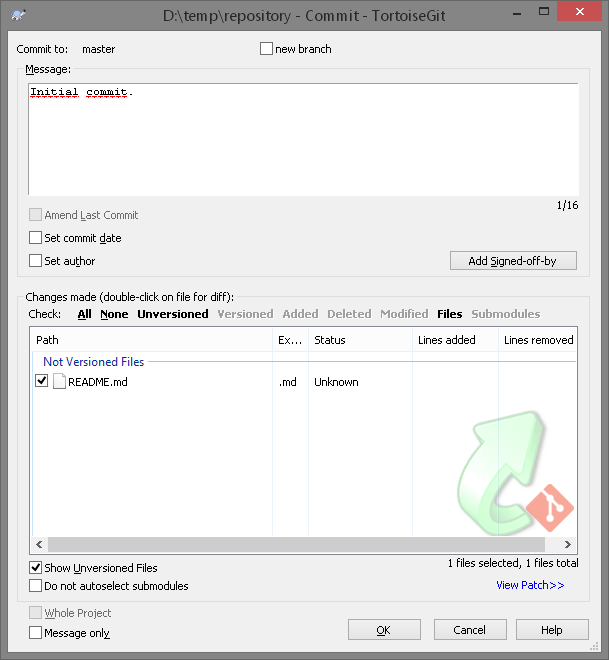
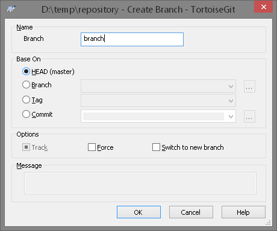
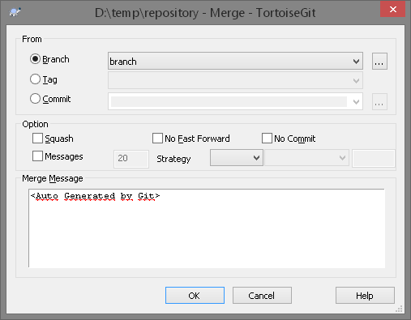

Итак, у вас имеется настоящий Git-репозиторий и рабочая копия файлов для некоторого проекта. Вам нужно делать некоторые изменения и фиксировать “снимки” состояния (snapshots) этих изменений в вашем репозитории каждый раз, когда проект достигает состояния, которое вам хотелось бы сохранить.
Как только вы отредактируете файлы, Git будет рассматривать их как изменённые, т.к. вы изменили их с момента последнего коммита. Вы индексируете (stage) эти изменения и затем фиксируете все индексированные изменения, а затем цикл повторяется.
Когда вы создаёте коммит в Git'е, Git записывает в базу объект-коммит, который содержит указатель на снимок состояния, записанный ранее в индекс, метаданные автора и комментария и ноль и более указателей на коммиты, являющиеся прямыми предками этого коммита: ноль предков для первого коммита, один — для обычного коммита и несколько — для коммита, полученного в результате слияния двух или более веток. Таким образом, Git сможет воссоздать текущее состояние, когда будет нужно.
Чтобы на самом деле разобраться в том, как Git работает с ветками, мы должны сделать шаг назад и рассмотреть, как Git хранит свои данные. Git хранит данные как последовательность снимков состояния.
Ветка в Git'е — это просто легковесный подвижный указатель на один из этих коммитов. Ветка по умолчанию в Git'е называется master. Когда вы создаёте коммиты на начальном этапе, вам дана ветка master, указывающая на последний сделанный коммит. При каждом новом коммите она сдвигается вперёд автоматически.
Из-за того, что ветка в Git'е на самом деле является простым файлом, который содержит 40 символов контрольной суммы SHA-1 коммита, на который он указывает, создание и удаление веток практически беззатратно. Создание новой ветки настолько же быстрое и простое, как запись 41 байта в файл (40 символов + символ новой строки).
Так как Git использует простое трёхходовое слияние, периодически сливать одну ветку с другой на протяжении большого промежутка времени достаточно просто. Это значит, вы можете иметь несколько веток, которые всегда открыты и которые вы используете для разных стадий вашего цикла разработки; вы можете регулярно сливать их одну в другую.
Многие разработчики Git'а придерживаются такого подхода, при котором ветка master содержит исключительно стабильный код — единственный выпускаемый код. Для разработки и тестирования используется параллельная ветка, называемая develop или next, она может не быть стабильной постоянно, но в стабильные моменты её можно слить в master. Эта ветка используется для объединения завершённых задач из тематических веток, чтобы удостовериться, что эти изменения проходят все тесты и не вызывают ошибок.
Тематические ветки, однако, полезны в проектах любого размера. Тематическая ветка — недолговечная ветка, которую вы создаёте и используете для работы над некоторой отдельной функциональностью или для вспомогательной работы.
Такая техника позволяет быстро и полноценно переключать контекст. Ибо когда все изменения разбиты по веткам и определённым темам, намного проще понять, что было сделано, во время проверки и просмотра кода. Вы можете сохранить там изменения на несколько минут, дней или месяцев, а затем, когда они готовы, слить их в основную ветку, независимо от порядка, в котором их создавали или работали над ними.

Теперь у нас есть цельный репозиторий с файлами в нем.
Теперь вы можете измененять, добавлять или удалять какой-нибудь файл в репозиртории. Рекомендуется делать это как можно чаще, но только в том случае, если ваши изменения являются цельными, и явно не нарушают работу проекта.
Во время написания чего-либо будь то книга, курсовая, проект на досуге, или работа над проектом в команде часто бывает необходимо добавить новую информацию, функционал, или переписать существующую часть при этом не нарушая целосности проекта. Для таких случаев пользуют ветвления.

Итак - называем новую ветку, и жмем Ок.
Ветка создана. Для того что-бы перейти на другую ветвь необходимо выполнить комманду "Switch/Checkout" из конекстного меню TortoiseGit и в появившемся окне бырать коммит, ветку или тег на которые вы хотите перейти. Но пока мы этого делать не будем. А создадим еще один файл, и "закоммитим" изменения.
Теперь при переходе на master ветку этот файл изчезнет. Это значит что изменения в нашей новой ветке не отразились на основной. В данном контексте перспективы использования данного функуионала могут показатся излишними. Но при разработке более крупных проектов подобные возможности очень сильно помогают сохранять организованность кода. Рассмотрим пример:
Вы создаете небольшую программу. Основной функционал уже готов, и она неплохо справляется со своими "обязанностями", но через некоторое время понадобилось некоторое изменение в ее работе. Есть два варианта развития событий: вы создаете ветку и начинаете разработку нового функционала в ней, или продолжаете работать в основной ветке. Новая вводная и этот функционал вам уже не нужен, а появилась потребность в другой "фиче"(англ. feature - особенность, черта). Если вы вели разработку в отдельной ветке, то никаких проблем не будет, вы просто перейдете в основную ветку, отпочкуетесь опять и спокойно будете работать. Во втором-же случае нужно будет откатывать изменения в главной ветке. Естественно, вы можете предварительно отпочковать текущие изменения и проблема тоже решена, но при еще нескольких вводных решение подобных проблем будут становиться все дольше и проблематичней, что делает ветки очень удобным инструментом систем контроля версий.
Для обьединения веток существует еще один инструмент, который называется слияния.
issue-45 попали в master, нужно перейти в master и мержить из нее.
К этому моменту вы уже должны уметь решать большинство повседневных задач, для которых будете использовать Git. Однако, для совместной работы в Git'е, вам необходим удалённый репозиторий. Несмотря на то, что технически вы можете отправлять и забирать изменения непосредственно из личных репозиториев, делать это не рекомендуется. Вы легко можете испортить то, над чем работают другие, если не будете аккуратны. К тому же, вам бы наверняка хотелось, чтобы остальные имели доступ к репозиторию даже если ваш компьютер выключен, поэтому наличие более надежного репозитория обычно весьма полезно. Поэтому предпочтительный метод взаимодействия с кем-либо — это создание промежуточного репозитория, к которому вы оба будете иметь доступ, и отправка и получение изменений через него.
Если вы не хотите связываться со всей работой по установке собственного Git-сервера, у вас есть несколько вариантов размещения ваших Git-проектов на внешних специальных хостинг сайтах. Это предоставляет множество преимуществ: на хостинг сайте обычно быстро настроить и запустить проект и нет никакого мониторинга или поддержки сервера. Даже если вы установили и запустили свой собственный внутренний сервер, вы можете захотеть использовать публичный хостинг сайт для вашего открытого кода — обычно сообществу открытого кода так будет проще вас найти и помочь.
В наши дни у вас есть огромное количество вариантов хостинга на выбор, все со своими преимуществами и недостатками. Актуальный список можно найти на следующей странице:
https://git.wiki.kernel.org/index.php/GitHosting
Поскольку мы не можем рассмотреть их все мы в этом разделе рассмотрим процесс создания учётной записи и нового проекта на GitHub'е. Если у вас есть потребность в закрытых репозиториях(бесплатно, но с ограничениями, в отличии от платного GitHub) - замечательной альтернативой GitHub является Bitbucket.
GitHub — крупнейший на сегодняшний день сайт, предоставляющий Git-хостинг для проектов с открытым исходным кодом, а также один из немногих, предоставляющих одновременно и публичный, и приватный хостинг, так что вы можете хранить ваш открытый и коммерческий код в одном месте.
Первое, что вам нужно сделать, это настроить учётную запись. Регистрация ничем не отличается от регистрации на других интернет ресурсах, та что эта часть освещаться не будет.
1.